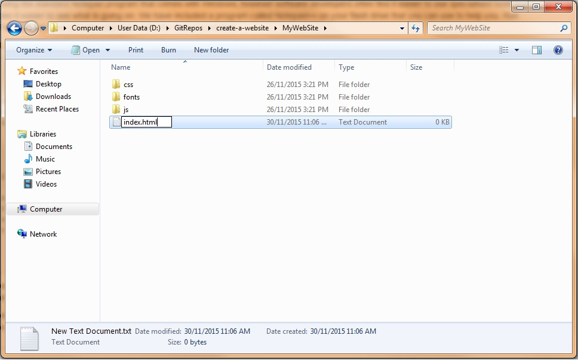
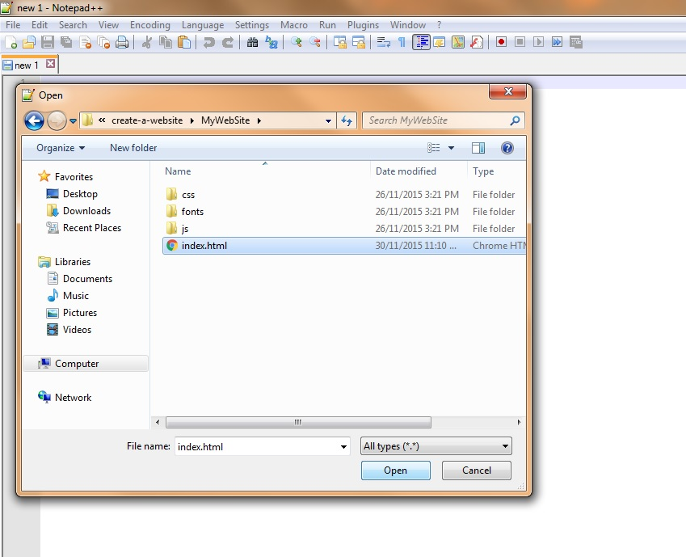

Lets get started...
Find the folder on your flash drive called 'MyWebSite'. We will put everything that our website needs into this folder. There should already be 3 other folders in here (css, fonts and js) but we can ignore these for now. The main entry point for any website will be an HTML file named index.html. Go ahead and create a file named index.html in your MyWebSite folder. You can do this by navigating to the folder, right click, New -> Text Document, then name it index.html. You might get a message asking if you are sure you want to change the file extension, you can click yes here.
We can write HTML code using the standard Notepad program that comes with Windows, however software developers often find it easier to use specialised tools that highlight their code and make it easier to see what is going on. We have included a program called Notepad++ on your flash drive that you can use to help you. Run Notepad++ and then click File -> Open, then choose your index.html file that you created.
Lets add some basic HTML to our index.html file. Copy and paste the code below into your file.
<!DOCTYPE html> <html> <head> <title>Bootstrap 101 Template</title> <!-- Bootstrap CSS --> <link href="css/bootstrap.min.css" rel="stylesheet"> </head> <body> <h1>Hello, world!</h1> <!-- Include jQuery (necessary for Bootstrap's JavaScript plugins) --> <script src="js/jquery-2.1.4.min.js"></script> <!-- Include Bootstap Javascript (necessary for some components) --> <script src="js/bootstrap.min.js"></script> </body> </html>
Save the file, then open your index.html in Chrome. You should see the words Hello, world!. You can keep this file open in Chrome and every time you make changes to the HTML in index.html you can press F5 in Chrome to refresh it and see your changes.
Try changing the Hello, world! text to something else, like your name. You will also notice that the text is inside a header tag
(<h1>...</h1>). You can change the size of the header tag by changing the number. 1 is the largest and 6 is the smallest.
Remember that the number in the starting tag and the ending tag must be the same.